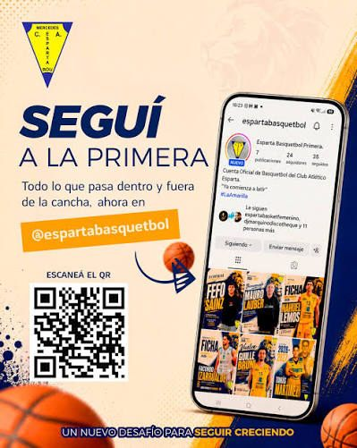
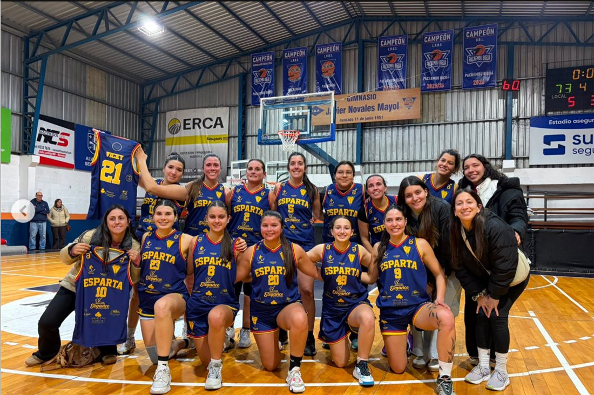
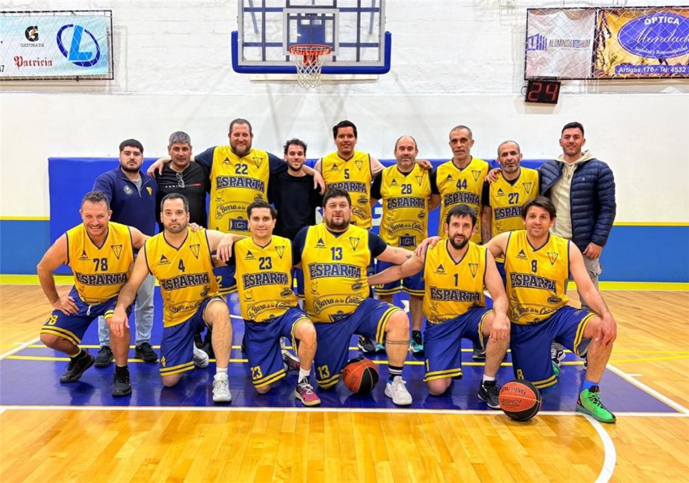
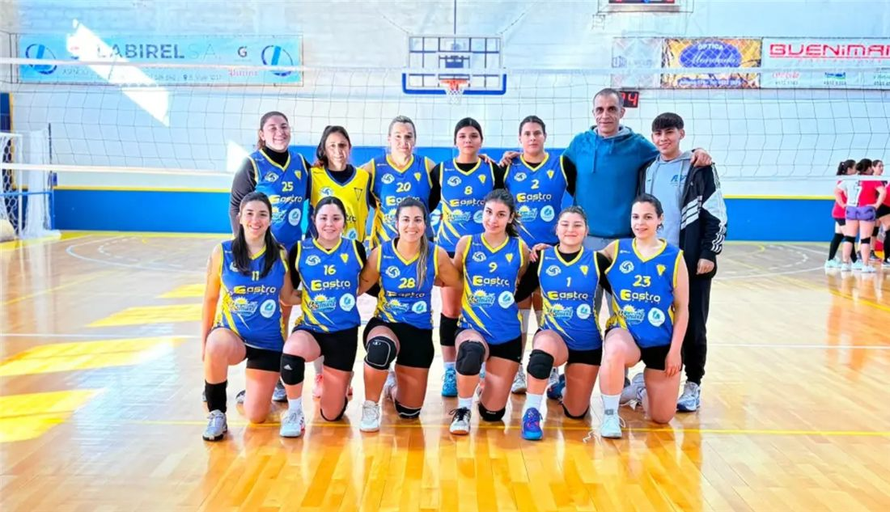
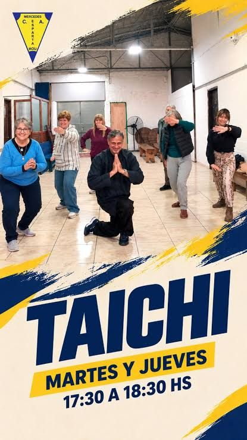
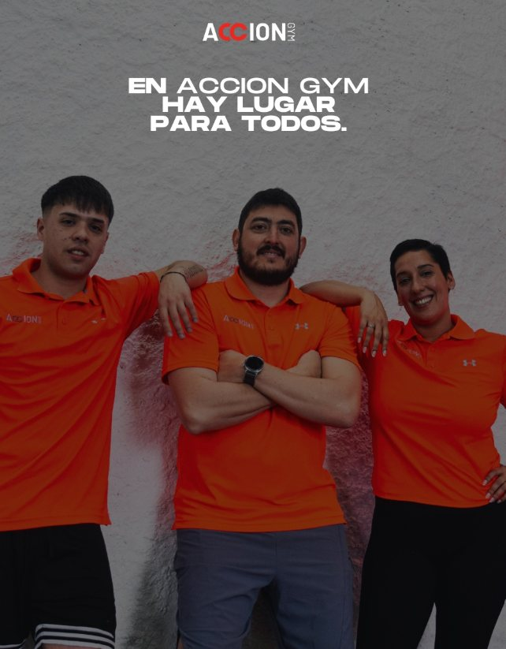
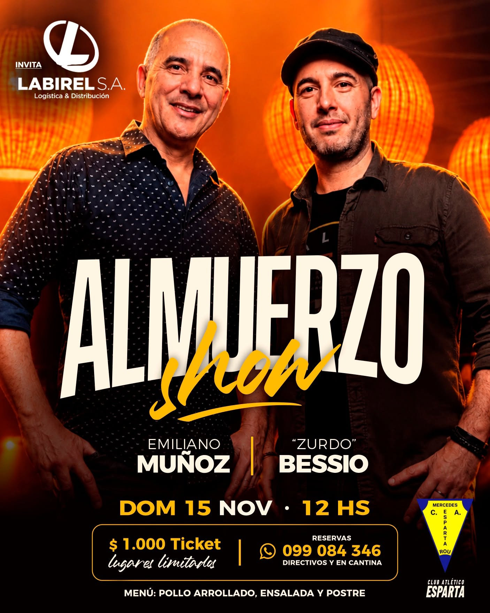
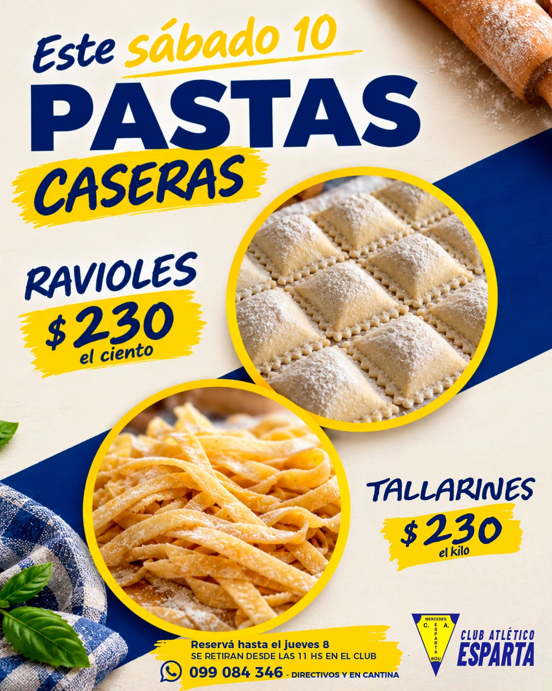
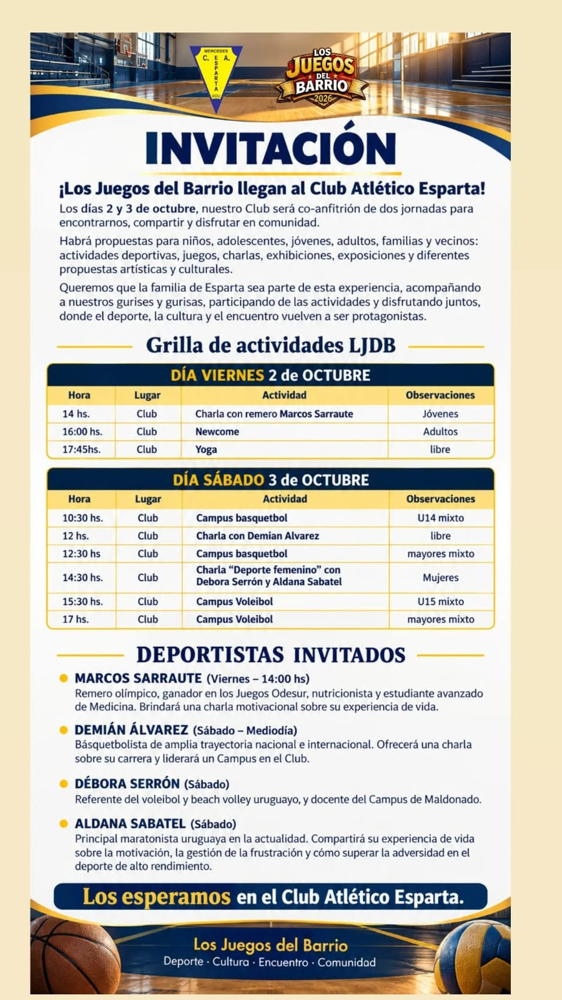

Primeros pasos en el deporte
Leoncitos, premini y mini de básquet, y vóley sub 12. Coordinación, juego y amigos para toda la vida.
Club Atlético Esparta · Mercedes, desde 1942
Básquetbol, vóley, judo, tai chi y sala de musculación. Hace más de 80 años que la Familia Espartana se encuentra en el Gimnasio 16 de Junio.
Un club para toda la vida
Desde la escuelita hasta el maxi básquet: actividades pensadas para cada etapa, con profes que acompañan dentro y fuera de la cancha.
Leoncitos, premini y mini de básquet, y vóley sub 12. Coordinación, juego y amigos para toda la vida.
Preinfantiles, infantiles, cadetes y juveniles de básquet, y vóley para mayores de 12. Torneos y el orgullo de vestir la amarilla.
Nuestros equipos mayores representan al club en la liga. Y para entrenar a tu ritmo, Acción Gym.
Esparta +35: básquet, amistad y los infaltables terceros tiempos. 🍻
Tai chi para el equilibrio y la calma, y judo en nuestro dojo, con judokas que llegan a competencias internacionales.
Seguinos
Cada equipo y disciplina de Esparta tiene su propia cuenta. Seguí la tuya y enterate de todo. También está la cuenta oficial del club, @clubatleticoespartamercedes.

Todo lo que pasa dentro y fuera de la cancha: fixture, resultados, MVP de cada partido y la previa de cada fecha. 🦁
Seguir en Instagram →
En la LRBS 2026 llegamos a semifinales. Somos más que un equipo: somos familia. ¡Gracias jugadoras, familias y cuerpo técnico! 2027 🔜🦁
Seguir en Instagram →
La cuenta oficial de Esparta +35: partidos, convocatorias y los fundamentales terceros tiempos. 🍻
Seguir en Instagram →
Sub 12 y mayores de 12, con el profe Fernando Vera. Torneos, entrenamientos y toda la actividad de la red. 🏐
Seguir en Instagram →
Martes y jueves de 17:30 a 18:30 h. Movimiento, equilibrio y calma para todas las edades. Las novedades salen en la cuenta del club.
Seguir en Instagram →
La sala de musculación del club. Seguilos para conocer horarios, planes y rutinas.
Seguir en Instagram →Horarios semanales
Elegí una disciplina y mirá cuándo entrenamos. Si tenés dudas, escribinos y te orientamos.
| Actividad | Días | Horario | Profe / DT |
|---|---|---|---|
| Formativas · Leoncitos | Mar · Jue | 17:30 – 18:30 | Oscar González |
| Formativas · Premini y Mini | Lun · Mié · Vie | 18:30 – 19:30 | Nicolás Olivera |
| Formativas · Preinfantiles | Lun · Mié · Vie Mar · Jue | 19:30 – 20:45 19:45 – 20:45 | Nicolás Olivera |
| Formativas · Infantiles, Cadetes y Juveniles | Lun · Mié · Vie Mar · Jue | 20:45 – 22:00 21:00 – 22:15 | Nicolás Olivera, Martín López y Federico Sainz |
| Básquet femenino | Mar · Jue Sáb | 20:30 – 22:00 11:00 | Huamani Millán y Federico Sainz |
| Maxi básquet +35 | Lun · Mié · Vie Sáb | 22:00 13:30 | – |
| Primera | A confirmar | Consultá en el club | – |
| Vóley · Sub 12 | Mar · Jue | 18:30 – 19:30 | Fernando Vera |
| Vóley · Mayores de 12 | Mar · Jue | 19:30 – 20:30 | Fernando Vera |
| Tai chi | Mar · Jue | 17:30 – 18:30 | – |
| Judo | A confirmar | Consultá en el club | – |
| Acción Gym (musculación) | Ver en su Instagram | @acciongym | – |
Básquetbol
Desde 1942 el básquetbol es el corazón de Esparta. Cuando juega La Amarilla 🦁, el Gimnasio 16 de Junio se llena de familia, de barrio y de aliento.
Orgullo espartano
El Club Atlético Esparta nació en Mercedes el 16 de junio de 1942, de la mano de un grupo de jóvenes del barrio que querían un lugar propio para jugar al básquetbol. Eligieron el nombre de Esparta porque representaba lo que soñaban: garra, disciplina y unión.
Con el esfuerzo de socios y vecinos levantaron en Leandro Gómez 1072 su casa, el Gimnasio 16 de Junio. Hoy la Familia Espartana sigue creciendo, con más disciplinas, más gurises y gurisas, y el mismo espíritu de siempre.
Vení a conocernosFundación del club, el 16 de junio.
Se inaugura la cancha en Leandro Gómez.
Campeones de la Liga Mercedaria de Básquetbol.
Una gran campaña de socios hace realidad el techo.
Celebramos ocho décadas de historia.
El Gimnasio 16 de Junio estrena piso. Los sueños están para cumplirse.
Novedades
Eventos, beneficios y todo lo que pasa en Esparta.

Buena música, encuentros y una jornada entre amigos y en familia en nuestro club. Ticket $1.000, lugares limitados.
¡En Esparta se viene un domingo con mucho ritmo! 💛💙
El domingo 15 de noviembre nos encontramos en nuestro Club para compartir un gran Almuerzo Show junto a Emiliano Muñoz y el "Zurdo" Bessio 🎶🙌
Buena música, encuentros y la alegría de volver a compartir una jornada entre amigos y en familia. ¡De esos momentos que se disfrutan mucho más juntos!
Armá tu mesa, invitá a tu gente y ¡no te olvides de traer el menaje!
Labirel S.A. invita a compartir este gran encuentro 🤝
¡Preparamos la mesa y ponemos la música! ¿Venís? 💛💙

Ravioles y tallarines caseros a $230. Cada compra suma para seguir creciendo. ¡Una vez más, hacemos club juntos!
💛💙 Una vez más, hacemos club juntos 💛💙
Este sábado 10 tenemos venta de pastas caseras a beneficio de nuestro Club 🍝
Cada reserva, cada compra y cada gesto de apoyo suma a nuestro club, para seguir creciendo, acompañando a nuestros deportistas y construyendo juntos esta historia 💪🏽
Porque cuando nos apoyás, también estás haciendo tu parte 💛💙

Dos jornadas gratuitas de deporte, charlas y cultura, con deportistas invitados como Demián Álvarez y Aldana Sabatel.
¡Esparta es parte de todo esto! 🔥✨ Falta menos y vos tenés que participar. Todas las actividades son gratis 🙌🏼
Los días 2 y 3 de octubre, nuestro Club es co-anfitrión de dos jornadas para encontrarnos, compartir y disfrutar en comunidad, con propuestas para niños, adolescentes, jóvenes, adultos, familias y vecinos: actividades deportivas, juegos, charlas, exhibiciones y propuestas artísticas y culturales.
| Viernes 2 de octubre | ||
|---|---|---|
| 14 h | Charla con el remero Marcos Sarraute | Jóvenes |
| 16 h | Newcom | Adultos |
| 17:45 h | Yoga | Libre |
| Sábado 3 de octubre | ||
|---|---|---|
| 10:30 h | Campus de básquetbol | U14 mixto |
| 12 h | Charla con Demián Álvarez | Libre |
| 12:30 h | Campus de básquetbol | Mayores mixto |
| 14:30 h | Charla "Deporte femenino" con Débora Serrón y Aldana Sabatel | Mujeres |
| 15:30 h | Campus de vóleibol | U15 mixto |
| 17 h | Campus de vóleibol | Mayores mixto |
Deportistas invitados
Judo: un judoka de nuestro dojo viajó a Rosario, Argentina, para competir en los Juegos Suramericanos en la categoría -73 kg. ¡Orgullo espartano!
Vóley: el Gimnasio 16 de Junio recibió el Torneo Abierto de Vóley categoría mayores, con equipos de toda la zona.
Hacete socio
Tres pasos y ya sos parte de la Familia Espartana.
Por WhatsApp al 099 084 346, con directivos o en cantina.
Te contamos horarios y cuotas. La primera clase es gratis.
Traé tus datos y listo: ya sos de Esparta. 💛💙
Contacto
Preguntas frecuentes
Depende de la actividad y de si sos socio o socia. Escribinos por WhatsApp al 099 084 346 y te pasamos los valores actualizados.
¡Sí! La primera clase de cualquier actividad es gratis. Avisanos por WhatsApp qué día vas a venir.
En básquet arrancan en Leoncitos y siguen por premini, mini, preinfantiles, infantiles, cadetes y juveniles. En vóley está la categoría sub 12. Consultanos qué categoría corresponde según la edad.
Escribinos y te contamos las opciones para socios y no socios en cada disciplina.
En Leandro Gómez 1072, Mercedes, Soriano. Es el Gimnasio 16 de Junio.